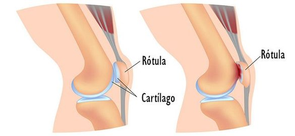
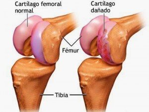
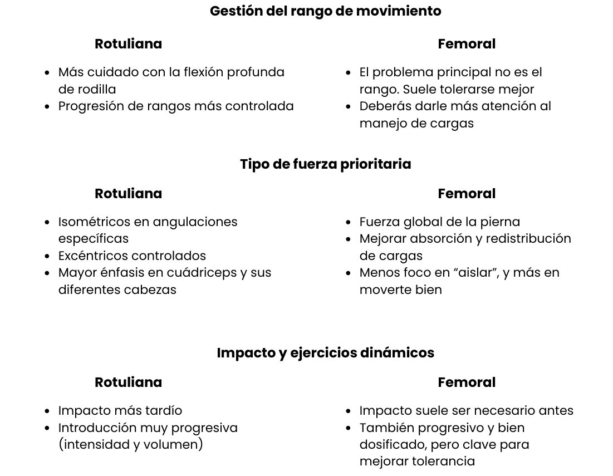

Especialista en readaptación de lesiones de rodilla
Uno de los principales problemas que veo a la hora de tratar una condromalacia rotuliana es que mucha gente me dice: “Edu, es que he probado de todo y el dolor no se va”
Podríamos entrar en el típico debate de tratamiento pasivo vs tratamiento activo, pero no voy a extenderme.
El tratamiento pasivo no cura la sintomatología de una condromalacia (independientemente del tipo), mientras que el tratamiento activo SÍ.
Ahora bien, es importante diferenciar el tipo de condromalacia que tienes porque cada una se produce por un motivo diferente.
En las siguientes páginas voy a contarte las principales diferencias a la hora de tratar una condromalacia rotuliana vs una condromalacia femoral
Ambas son un desgaste del cartílago que rodea un hueso, pero la primera es de la rótula, y la segunda del fémur
Ambas tienen diferentes grados de desgaste, que van desde el grado 1 hasta el grado 4.
En este caso, el desgaste del cartílago se produce en la cara interna de la rótula, como puedes apreciar en la imagen

En este caso, el desgaste del cartílago se produce en una de las dos cabezas del fémur (interna y externa), como puedes apreciar en la imagen.

En los informes de las resonancias, podrás encontrarlo como: CFI: Condromalacia femoral interna CFE: Condromalacia femoral interna
Realizar el mismo tratamiento en ambas sería un error, puesto que cada una se produce por unas causas mecánicas diferentes, y eso debe verse reflejado en la rehabilitación.
De hecho, incluso si seleccionamos a 2 personas con el mismo tipo y grado de condromalacia, también sus rehabilitaciones han de verse diferentes. Por eso, las tablas genéricas de rehabilitación o programas estandarizados NO sirven.

Quiero hacer una aclaración en este punto: Los cartílagos no tienen riego sanguíneo directo, por lo que su forma de nutrirse y adaptarse es mediante compresión + descompresión.
Sin embargo, en una rotuliana, esa presión es contraproducente, por eso ha de introducirse más tarde, y de forma más progresiva, mientras que en una femoral se puede y se debe introducir de forma “temprana”.
Entender qué tipo de condromalacia tienes es el primer paso. Ajustar el entrenamiento a ese diagnóstico es lo que marca la diferencia.
Si después de leer esto tienes dudas sobre tu caso en particular o no sabes cómo aplicar estos principios a tu entrenamiento actual... ahí es donde tiene sentido una valoración individual y trazar una hoja de ruta acerca de tu lesión en concreto.
¿Quieres que lo veamos aplicado a tu caso? Cada rodilla y cada proceso es distinto, y muchas veces pequeños ajustes marcan una gran diferencia.
Escríbeme sin compromiso